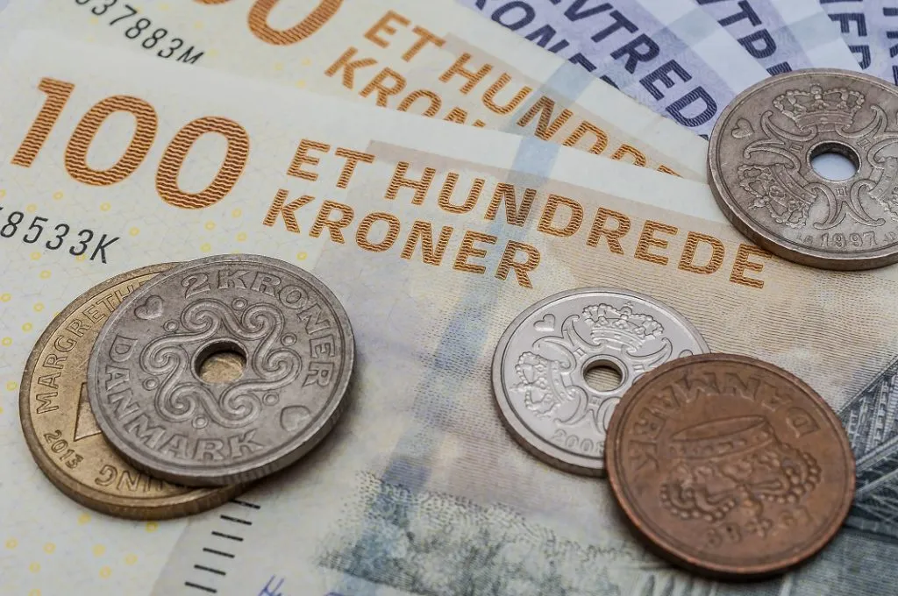

Economy
Denmark is a modern mixed economy with comfortable living standards, a high level of government services and transfers, and a high dependence on foreign trade. Denmark’s economic freedom score is 77.8, making its economy the 10th freest in the 2021 Index. Its overall score has decreased by 0.5 points, primarily because of a decline in labor freedom. Denmark is ranked 5th among 45 countries in the European region, and its overall score is above the regional and world averages. Were it not for its history of very low scores for tax burden and government spending, Denmark’s economy would be rated as free.The Danish tax system is progressive. This means that the higher your income, the more taxes you have to pay. In many other countries, citizens pay less tax than in Denmark, but in return, they have to pay to go to school, to the hospital, the doctor's, etc.
Exports
Denmark's top exports include refined petroleum, pig meat, iron structures, crude petroleum, and pigs.
Imports
Denmark’s top imports are refined petroleum, crude petroleum, soybean meal, iron structures, sawn wood.
Top trading partners
Germany, Sweden, and the Netherlands are the top trading partners of Denmark. 15.6% of Denmark’s total exports were exported to Germany in 2020, 10.5% to Sweden, and 7.1% to the Netherlands.


Currency
Denmark uses its own currency called Danish Krone and its sign is kr and code is DKK. 1 Danish Krone is equal to 0.20 Candian dollar.
